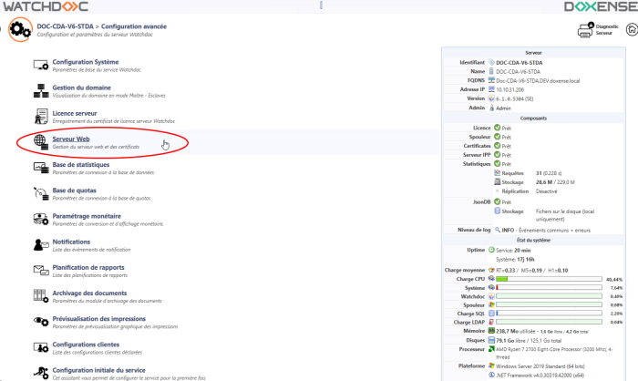
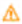
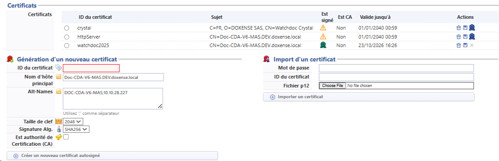

Nouvelle fonctionnalité de la v. 6.1.0.5011
Principe
Watchdoc échange des informations avec différents périphériques (imprimantes, MFP, lecteurs de cartes) grâce à des interfaces telles que WSC, les WES et autres API (dont la Print API pour WPC et Skyprint).
Pour sécuriser ces pages accessibles via Internet, Watchdoc utilise le protocole TLS/SSL (via les ports 5744, 5753 et 5754) reposant sur des certificats auto-signés.
Avant, c'est à l'aide de l'outil en ligne de commande Watchdoc Certificat Manager (WCM) que l'on pouvait gérer ces certificats ou d'autres, signés par une autorité de certification. WCM permettait aussi de diagnostiquer les anomalies impliquant les certificats et les protocoles SSL/TLS (cf. Signer un certificat avec WCM).
Depuis la v. 6.1.0.5011, Watchdoc dispose d'une interface dédiée, plus simple à utiliser que l'outil WCM (qui reste néanmoins opérationnel).
De plus, il est désormais possible de configurer une notification pour informer l'administrateur que la date d'expiration d'un certificat approche ou dès que le certificat est expiré. Pour cela, il convient de configurer une notification à partir des événements "Le certificat du serveur HTTP va bientôt expirer" et "le certificat du serveur est expiré" (cf. Configurer les notifications et Configurer les événements de la notification).
Dans une configuration en domaine, cette notification peut être répliquée depuis le serveur master (maître) vers les autres serveurs (esclaves).
N.B. : les certificats s'appliquant à l'interface d'administration de Watchdoc, de même que la page "Mon compte" dédiée aux utilisateurs de Watchdoc dépendent de MS IIS®.
Accéder à l'interface de configuration
-
Accédez au Menu principal de l'interface d'administration de votre serveur Watchdoc en tant qu'administrateur,
-
dans la section Configuration, cliquez sur Configuration avancée.
-
dans l'interface Configuration avancée,, cliquez sur Certificats (avant v. 6.1.0.5262) ou Serveur web (après v. 6.1.0.5262) :

è Vous accédez à l'interface Gestion des certificats (avant v. 6.1.0.5262) ou Serveur web (après v. 6.1.0.5262).
Présentation de l'interface
L'interface est composée de 3 sections :
-
la section Certificats affiche une liste les certificats disponibles. Ces certificats sont utilisés pour sécuriser les points d'entrée du serveur web, indiqués dans la section DSP (cf. Gérer les points d'entrée du serveur web et certificats associés).
-
le bouton-radio permet de sélectionner un certificat pour en afficher les informations en-dessous ;
-
dans la colonne Est signé :
-
le logo indique que le certificat n'est pas signé ;
-
le logo

indique que le certificat est auto-signé ; -
le logo indique que le certificat est signé par une autorité de certification ;
-
-
dans la colonne Actions :
-
le bouton permet de supprimer un certificat ;
-
le bouton permet de télécharger le certificat ;
-
le bouton permet de télécharger le CSR du certificat pour en demander la signature ;
-
-
-
la section Génération d'un nouveau certificat permet de générer un nouveau certificat auto-signé ;
-
la section Import d'un certificat permet d'importer un certificat (généré ou fourni par une autorité de certification) :

{kind=link}